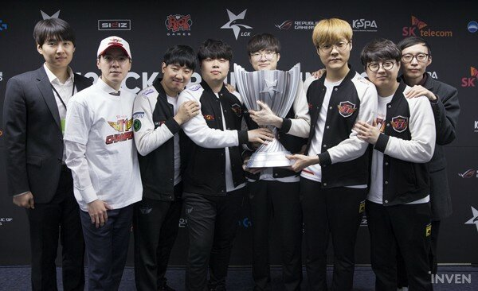
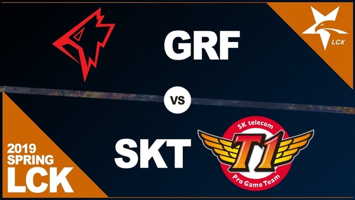
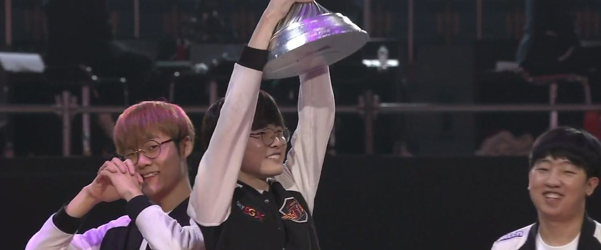
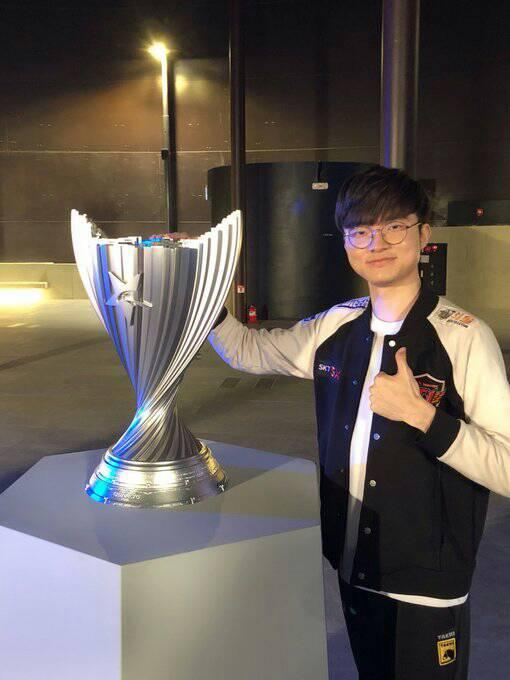

SKT GANÓ LA FINAL DE LA LCK


SKT barrió en la final de la LCK por tres mapas a cero a un irreconocible Griffin que, tras perder la primera partida, se vino abajo y prácticamente no pudo hacer nada para parar las acometidas de los tricampeones mundiales.
Como ya hiciesen en la temporada de verano con la elección de Urgot, Griffin nos tenía preparada una sorpresa en el primer mapa de la final de la LCK. La bot lane de Griffin escogió Taliyah y Pantheon para sorprender a sus rivales, aunque esta elección no funcionó como ellos esperaban
La segunda partida no tuvo color. SKT logró un dos por cero tras un invade fallido de Griffin que le permitió hacer snowball el resto de la partida gracias a que dejaron muy por detrás a la Lissandra de Jeong 'Chovy' Ji-hoon.
En la tercera, Griffin volvió a repetir el plan de partida de la primera, eso sí, con el mismo resultado. SKT se adaptó muy bien al draft de su rival y con Riven de counter pick de Aatrox y con la comodidad de Ezreal en el carril inferior, aplastaron a los campeones de la liga regular que no tuvieron su mejor día.

FAKER ESTA DE REGRESO
